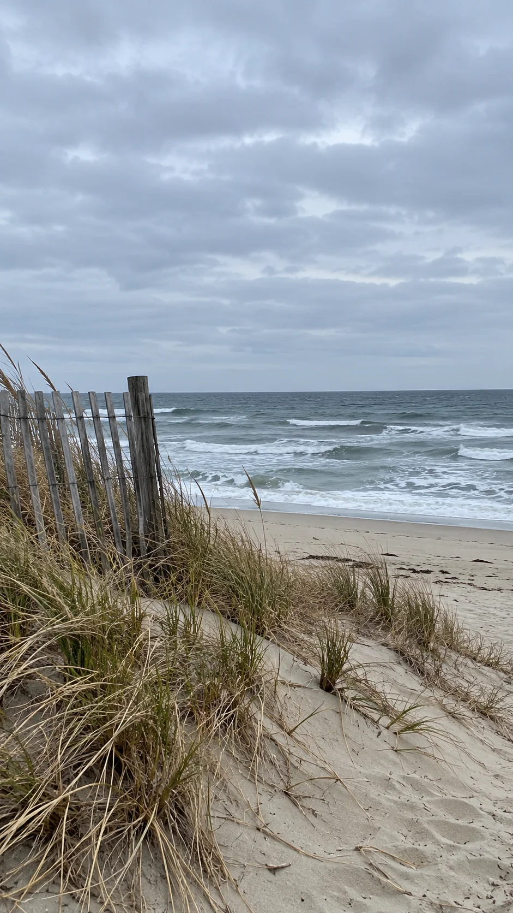

创作AI 成片
AI 成片 / 旅行日记先套一个故事，再改成自己的话。
片语：为小影（VivaVideo）已有成片与编辑能力设计的一处局部修改入口。

旅行日记按这一天的顺序出发 → 细节 → 海边 → 回程
旅行日记先看见海海面开场 → 回看路上 → 天色收尾
海边开场
30 秒 · 日记字幕 · 更长的环境镜头
模板初稿之后，多留一个修改入口模板原句天色暗下来，准备回去了。
→自己的话没等到日落，倒是慢慢走回来了。
满意的锁住，只改不像你的那一句。示例文字为预置内容。
非官方功能概念，未接入小影 App；这里演示拟议入口与增量流程。素材、配乐与初稿均为演示内容。
作品预览9:16 · 竖屏
你的片段，你的说法。先有初稿，再慢慢改。